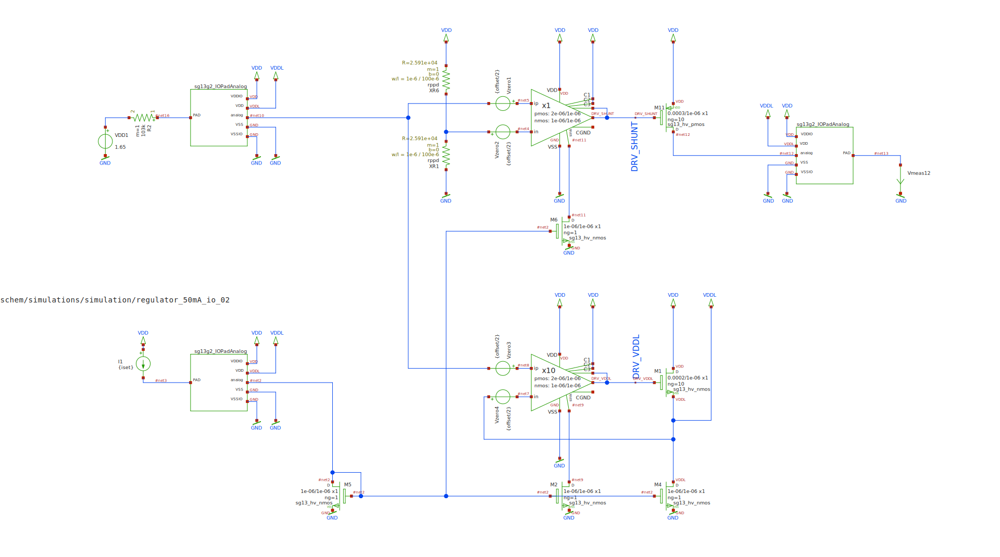
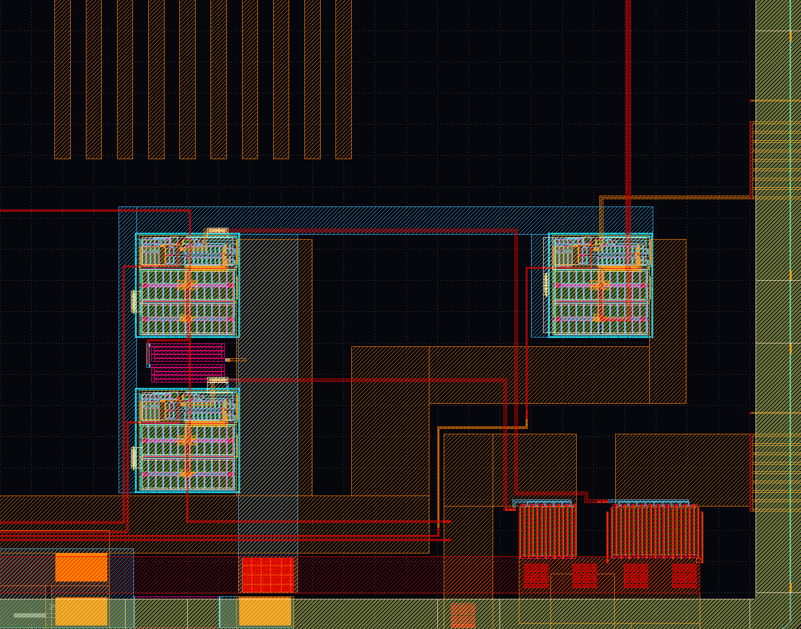

voltage-regulators
shunt-regulator
the shunt-regulator has to limmit the supply-voltage to 3.3V. it should be usable to 50mA. the regulating current flows thru M11. and to allow this the pin SHUNT_GND needs to be connected to VSS. optional over an current-meter.
in the layout the left/top OTA is used in this circuit.
serial-regulator
the serial regulator should produce 1.8V vor low-voltage MOSFETs. the OTA responsible for this regulator is left/bottom in the layout.
SCHEMATiC
LAYOUT
SiMULATiON
LVS
LVS wasnt working